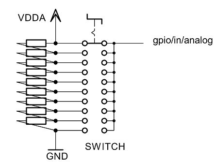
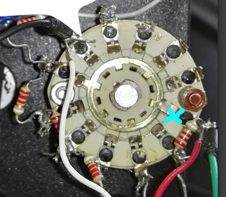
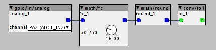

Hello,
I was wondering if a bank of toggle switches could be wired passively with resistors to one gpio? If the AD converter is 12 bit then 12 switches right? With proper scaling each unique switch state could be utilized.
Multiple toggle switches on one GPIO
Dolphinwolf
#1
johannes
#2
It is hard to make accurate "binary" voltages with only switches and resistors. https://en.wikipedia.org/wiki/Resistor_ladder
4 or 5 bits sounds possible, more will run into trouble I think.
If you use a toggle switch to select between GND and VDDA it is also important that the switch is a "break-before-make" type, otherwise it will briefly short out VDDA while flipping.
The GPIO AD convertor indeed has 12 bit resolution, but has some noise in it. And when flipping a switch you may also get intermediate readings that do not correspond to the switch position before or after flipping ("glitches").
One particular application that works well is reading one 12-position rotary switch with one analog GPIO, by converting the rotary switch into a stepped potentiometer using a sting of equal resistors, like this.
To read a lot of switches it is better to use shift register chips on SPI.
Official pin out/ports documentation
Dolphinwolf
#3
Thank you for the reply. I am looking into I2C and or 4 toggles per Gpio.
Thank you for the soulful engineering as well.
kashis
#4
he there,
Im stuck with the rotary switch ,i tested it with a volt meter and the voltage drops at every pin.so it is working.
in the GPIO in patch i don't see anything.i tested different gpio's also without succes.
anybody ideas?
i made it till 8 steps with 2.2k resistors to a PA7/PA3 gpio.
kashis
#5
i did some adjuting,i think i was working from the " end " of the switch,but now if i turn it to the last point,the axoloi automaticly shuts down.
this must be because th VDDA and GND make contact . but i still dont have any reading on the gpio in with the scope.any help would be highly appreciated because this will be the hearth of the matrix synth 
johannes
#6
That sounds like the wiring is not like it should be, should be something like this:

Help Needed w/ External Pots
kashis
#7
hi johannes, thanks for the fast reply.
I hope you can see the connections good at the picture:
{kind=link}
i made on both sides a cable out for testing ,so i can put both on gnd and vdda for testing. Not one side worked. It doesnt matter or i connect the white or red to the gnd or vdda,it both shuts down
before i started from the other side (from the righ screw up ,at the picture)and went counter clockwise counting till 8.here i didnt took any reading or any disconnection. The switch was working because i tested the voltage and this went from 3v in steps to 0.3 if i remember correct the exact voltages.
After checking some ways i thought what could help ,i saw it disconnected if i had the vdda cable to the point where i started now(the point in the picture with the green cable attached).
So i thought that must be the ground and i connected the white cable to the other end with the cable to the axo PA7. No reading only disconnected at the specific point in the picture.
{kind=link}
{kind=link}
i checked the help gpio-in like you told me before wih other problem and also no reading
On a sidenote..i have now all 10k pots and i see no leaking as before!so the sound will be more steady.
DIAL MATRIX SYNTH FOR PANEL2.axp (118.4 KB)
i added some pictures and the patch,i hope this give a it more clearity
johannes
#8
On the switch, the pin I marked with the blue "X" is the "common", that needs to go to the analog gpio input, and not connect to anything else.
(if I can see it correctly from your picture, luckily your rotary switch does not cover its internals)

If your red wire is VDDA, and black wire GND, then your switch will shortcircuit VDDA to GND in that position.
I think you need to remove the resistor between the common and the previous terminal, and connect the red wire to that terminal.
kashis
#9
thanks a lot!i will do it now directly.
thanks so much for your time and this great project, open source,cheap,so much fun!
kashis
#10
working!!!!!!!1
lets play and mak more rotary switches now,need some more resistors but this is perfect!!!
the gpio in ,shows exactl the steps,very nice,but in the patch it doesnt work.
i connected it to the gpio-in and the to a counter and nothing happens and from the gpio -in straight to the mux doesnt work either. i miss a step i guess?
johannes
#11
Use a topology like this to convert to an integer:

adjust the "math/*c" parameter to the number of steps of your switch.
kashis
#12
thanks!it is working now!i must make some hook's now and i think it is skipping one step.
thanks for the help now im sure i will make what i want 
kashis
#13
i dont need to hook anything,it is because of the jitter the pots looked like they pick up last signal,but with a normal ctrl dial i he dont do it , so i need to order the 1nF capacitors to solve this i think
this is good because i have SDRAM overflow by adding 2 more hook objects.im at the limits and wanted to add some more stuff. Maybe i should think about another core ?
johannes
#14
Most likely the "math/*c" parameter is off by one. Use a "disp/dial p" after "math/*c" to diagnose, it should show almost round numbers.
kashis
#15
sorry for late reaction , i had some more patching and solderig to do hehe now im testing , and i see he skips step 2 and 6. if i put the dial up and down he missing other steps.,should i maybe make a new thread for dial matrix synth for this subject?
johannes
#16
If you connect a "disp/dial p" to the "gpio/in/analog", what values do you read at different switch positions?
kashis
#17
Hi,i get 0,1,3,4,5,7,8, and the he switches automatically very fast between,2345 if i see good, it goes very fast
johannes
#18
I suspect those are values after "math/*c" and "math/round", I need the readings from "disp/dial p" right after "gpio/in/analog".
kashis
#19
ah ok my excuses,sounds more logic yes
0 - 0.50
10.65 - 10.69
21.25 - 21.30
31.95 -32
42.64 - 42.68
53.34 - 53.28
63.92 - 63.97
and then he wiggles very fast in th 30's, sometimes high in the 20's and begin 40's
the noise is pretty disrupting in the matrix,because he pickups up the control when it change its position automaticly,in the matrix is not workable like this.is there a solution for this?
kashis
#20
i checked the thread with noisy analog input but this doesnt work for me,only the capacitors i have to try